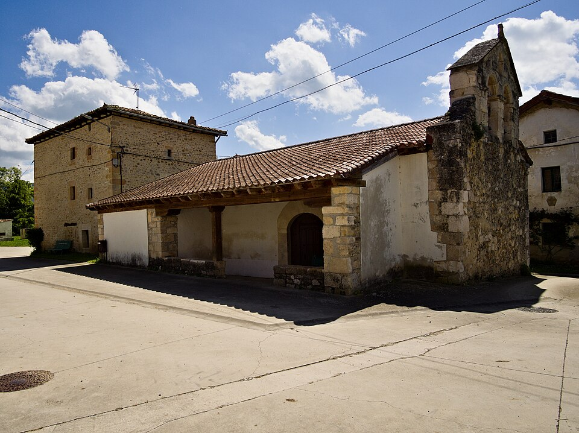

Pradolamata es una localidad del municipio burgalés de Merindad de Cuesta-Urria, en la comunidad autónoma de Castilla y León (España).
Así se describe a Pradolamata en el tomo XIII del Diccionario geográfico-estadístico-histórico de España y sus posesiones de Ultramar, obra impulsada por Pascual Madoz a mediados del siglo XIX:
Villa en la provincia, diócesis, audiencia territorial y capitanía general de Burgos (15 leguas), partido judicial de Villarcayo (2) y ayuntamiento titulado de la merindad de Cuesta Urria (1); Situada en un llano a la orilla del río Nela; la combaten todos los vientos y goza de clima templado; siendo las enfermedades más comunes los constipados. Tiene 10 casas, una fuente de buenas aguas; iglesia parroquial (San Juan Bautista), aneja de la de Moneo, distante ¼ de legua; un cementerio contiguo a aquella, la cual se halla a 200 pasos fuera de la población, y en el centro de esta una ermita bajo la advocación de Nuestra Señora del Rosario. Confina el término N San Cristóbal; E Cebolleros; S Villamagrín, y O Moneo. El terreno es llano, de ínfima calidad, y la mayor parte de secano; el mencionado río corre en dirección de O a E, sin que sus aguas se aprovechen para el riego. Los caminos se hallan en regular estado, y dirigen a Nofuentes, Cebolleros, San Cristóbal y Moneo. Correos: se reciben de Medina de Pomar por propio.
- Producciones: trigo, cebada, centeno, avena, yeros, titos, habas, maíz, lentejas y patatas; cría ganado lanar; caza de liebres y perdices, y pesca de truchas, anguilas, barbos y otros peces pequeños.
- Industria: la agrícola.
- Población: 8 vecinos, 31 almas.
- Capital productivo: 95.400 reales.
- Imponible: 9.645.